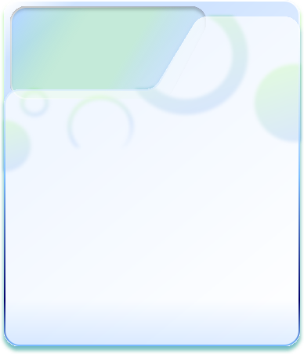

患者管理
PATIENT MANAGEMENT
新增患者
患者基本資料
PATIENT INFORMATION
姓名
患側
左側
右側
輔助方式
健側手輔助
手托
桌面滑板
其他
開始復健
舒適、不疼痛的範圍內進行
前測開始
正在啟動鏡頭
正在啟動鏡頭…請在瀏覽器詢問時按「允許」。
×
肩關節前舉
SHOULDER FORWARD FLEXION
請慢慢向前抬起患側手臂
在舒適、不疼痛的範圍內完成即可。
REFLECT ／ 復健遊戲
王小明
🍎
🍐
🍊
🍐
🍎
🍊
🧺
肩部伸展・左右交替
果園大豐收
抬起手臂，摘下樹上的果實
點按畫面，查看本次結果 →
查看本次結果
SESSION ／ 療程紀錄
王小明
清除這位患者的紀錄
×
✦
療程問題截圖會顯示於此
AI 偵測到角度未達目標或姿勢追蹤異常時，會自動保存畫面
‹
›
醫病互動劃記
SHARED SESSION ／ 共同回顧
⠿
畫筆顏色
粗細
橡皮擦
復原
清除
⛶
畫筆粗細
4 px
橡皮擦大小
18 px
修改姓名
清除資料
刪除患者檔案
取消
修改姓名
姓名
取消
儲存
新增患者
姓名
取消
建立患者